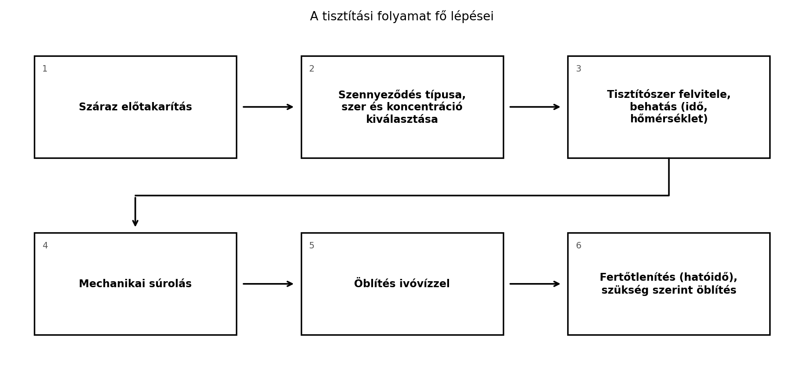

Hajnali háromkor a pék a dagasztógépnél áll, és azt látja, hogy az előző napról a keverőkarra rászáradt tészta, a sütőlemezről pedig sötét, karamellizált zsírréteg nem jön le hideg vízzel. A kelesztőkamra párás fala az utóbbi napokban egy-két penészpontot mutatott. Ha egyszerűen csak felönti egy vödör vízzel, a látható maradék talán eltűnik, de a mikrobák és az allergén-zsírmaradékok megmaradnak. A rosszul megválasztott szer viszont maradékot hagyhat a felületen, ami a következő tésztába kerülhet, vagy károsíthatja a gép tömítéseit.
Ebben az alfejezetben azt tanuljuk meg, hogyan válasszuk ki a szennyeződéshez illő tisztító- és fertőtlenítőszert, milyen hatásmechanizmussal dolgoznak, és milyen vízminőség szükséges a hatékony tisztításhoz. Ezt a tudást a következő alfejezetben, a Takarítás, tisztítás és fertőtlenítés a gyakorlatban során használjuk fel, amikor tényleges tisztítási tervet készítünk.
A tisztítás nem egyetlen lépés, hanem egymásra épülő műveletsor. A tisztítószer nem „varázsszer”: csak akkor működik, ha a szennyeződést fellazította, a víz hőmérséklete és keménysége megfelelő, és az öblítés után nem maradt vegyszermaradék.

A tisztítás és a fertőtlenítés nem ugyanaz. A tisztítás a szennyeződést távolítja el, a fertőtlenítés a még visszamaradt mikroorganizmusok számát csökkenti a biztonságos szintre. A kettő együtt adja az élelmiszer-biztonsági alapot.
Definíció. Tisztítás: Olyan műveletsor, amelynek célja a felületről a látható és láthatatlan szennyeződések – ételmaradékok, zsírok, fehérjék, ásványi lerakódások, por, esetleg mikrobák – eltávolítása fizikai (mechanikai, hő) és kémiai (tisztítószerek) hatásokkal.
Definíció. Fertőtlenítés: Olyan vegyszeres vagy hőkezeléses művelet, amely az élelmiszerrel érintkező felületeken, tárgyakon az életképes mikroorganizmusok számát olyan szintre csökkenti, amely nem veszélyezteti az élelmiszer-biztonságot. A fertőtlenítés csak tiszta felületen hatékony.
Szabály. Tisztítás és fertőtlenítés sorrendje. Először mindig tisztítunk, utána fertőtlenítünk. Ha a felületen zsír-, fehérje- vagy szénhidrátmaradék van, az megvédi a mikrobákat a fertőtlenítőszer hatásától, és a fertőtlenítőszer is elreagálhat a szennyeződéssel. Ezért a „fertőtlenítem, és így tiszta lesz” gyakorlat téves.
Követelmények a tisztító- és fertőtlenítőszerekkel szemben:
Előírás. Az élelmiszer-higiéniai előírások szerint az élelmiszer-előállító helyiségekben csak olyan tisztító- és fertőtlenítőszereket szabad használni, amelyek élelmiszer-üzemekben, élelmiszerrel érintkező felületeken alkalmazhatók. A biocid hatású fertőtlenítőszerek forgalmazása és felhasználása az Európai Unió biocid rendelete szerint engedélyköteles (ellenőrizendő: a biocid termékekre vonatkozó 528/2012/EU rendelet aktuális szövege, illetve a nemzeti engedélyező hatóság listája). Az élelmiszer-vállalkozónak biztosítania kell, hogy a tisztító- és fertőtlenítőszereket elkülönítetten tárolják, és ne szennyezzék az élelmiszert vagy annak csomagolóanyagát (ellenőrizendő: 852/2004/EK rendelet vonatkozó előírásai).
A sütőiparban a jellemző szennyeződések:
Ezek a szennyeződések eltérő kémhatású és összetételű tisztítószereket igényelnek.
A lúgos tisztítószerek pH-ja 10 fölött van. Hatóanyaguk jellemzően nátrium-hidroxid (NaOH, nátronlúg), kálium-hidroxid (KOH), nátrium-karbonát (, szóda) vagy nátrium-metaszilikát. (A szódabikarbóna, , csak enyhén lúgos, pH ≈ 8, ezért a semleges–enyhén lúgos szerek közé tartozik, és nem éri el a „pH 10 fölötti” csoport határát.) A lúg elszappanosítja a zsírokat: a zsírsav-észtert vízben oldódó, öblíthető szappanná alakítja. A fehérjéket duzzasztja és hidrolizálja; a keményítőt fellazítja.
A lúgos tisztítószerek ezért a zsíros, fehérjés, rásült szennyeződések eltávolítására a legalkalmasabbak a pékségben. Például a sütőlemezek, dagasztógép, keverőcsészék, tésztamaradékkal szennyezett asztalok tisztításához.
Figyelem. A tömény lúg maró hatású: bőrre, szembe kerülve súlyos sérülést okoz. A lúg a szerves anyagokat támadja, ezért a bőrön a szöveteket is feloldja. Használatakor védőkesztyű, védőszemüveg, arcvédő és védőkötény szükséges. A biztonsági adatlap szerinti egyéni védőeszközöket mindig be kell tartani.
A savas tisztítószerek pH-ja 3 alatt van. Hatóanyaguk citromsav, ecetsav, foszforsav, tejsav vagy kénsav (utóbbi erős sav, élelmiszerüzemben óvatosan, általában hígítva). A savak a vízkövet (kalcium- és magnézium-karbonát) oldják, a rozsdafoltokat fellazítják, és a csapadékos lerakódásokat eltávolítják.
A sütőiparban a savas tisztítószert a kelesztőkamra párologtatójánál, a gőzfejlesztőben, a mosogató- és hűtőberendezések vízköves részein, illetve a vízforraló- és kávéfőző-készülékeknél alkalmazzák. Fontos, hogy savas és lúgos tisztítószert közvetlenül ne keverjünk, mert heves reakció, hőfejlődés, gáz- vagy vegyszerfröccsenés következhet be.
Figyelem. Klórtartalmú fertőtlenítőt (nátrium-hipoklorit) soha ne keverd, és ne használd közvetlenül egymás után öblítés nélkül savas szerrel (vízkőoldó, ecet, citromsav) vagy ammóniás tisztítóval: mérgező klórgáz, illetve klóramin keletkezik. A részleteket a Kémiai biztonság és hígítási számítások alfejezet tárgyalja.
Figyelem. A sav a rozsdamentes acélt általában nem károsítja, de a betont, márványt, terrazzót megtámadhatja. A savas tisztítószer után alapos ivóvizes öblítés kell, mert a maradék sav a következő élelmiszerrel érintkezve ízhibát okozhat.
A semleges tisztítószerek pH-ja nagyjából 6–8. Enyhe felületaktív anyagokat (tenzideket) tartalmaznak, amelyek a zsírt emulgeálják anélkül, hogy erősen lúgos vagy savas kémhatást hoznának létre. Alkalmasak napi, kímélő tisztításra, például műanyag rekeszek, hűtőszekrények, fogantyúk, kapcsolók, munkalapok és gyakran használt felületek tisztítására, ahol nincs erős rásülés.
A felületaktív anyagok (tenzidek) csökkentik a víz felületi feszültségét, ezzel a szennyeződést leválasztják a felületről, és a vízben finoman eloszlatják (emulgeálják, diszpergálják). A semleges tisztítószerekben ezek gyakran nemionos vagy anionos tenzidek. A semleges szer kíméletesebb, de önmagában kevésbé hatékony erős, rásült zsír ellen; ilyenkor meleg vízzel és mechanikai dörzsöléssel lehet javítani a hatásfokot.
Definíció. Fertőtlenítőszer (biocid): Olyan hatóanyag vagy készítmény, amely mikroorganizmusokat (baktériumok, gombák, vírusok) elpusztít vagy működésüket gátolja. Élelmiszer-üzemben csak olyan fertőtlenítőszert szabad használni, amelyet élelmiszerrel érintkező felületre engedélyeztek.
A fertőtlenítőszerek hatásmechanizmusa:
A sütőiparban használt fontos fertőtlenítőszer-csoportok:
A tisztítás és a fertőtlenítés hatékonysága erősen függ a víz minőségétől.
Definíció. Víz keménysége: A vízben oldott kalcium- (Ca²⁺) és magnézium-ionok (Mg²⁺) összes mennyisége. A magyar gyakorlatban a keménységet gyakran német keménységi fokban (nk°) fejezzük ki, de a modern laboratóriumi mérések milliekvivalens/liter vagy ppm (mg/l) értékben is megadják. Az átszámítási arány ellenőrizendő a mérési bizonylat alapján (ellenőrizendő: a helyi vízmű vízminőségi adatai vagy laboratóriumi mérés).
A kemény vízben a kalcium- és magnézium-ionok lúgos tisztítószerrel vízkő-csapadékot képezhetnek, amely lerakódik a felületen, és megköt a mosogatószerekből hatóanyagot. Ezért kemény víz esetén:
A sütőipari üzemben ideális a lágy vagy közepesen kemény víz. Sok pékség vízlágyító berendezést használ a tisztítási folyamatokhoz, különösen a gőzfejlesztőkhöz és a kelesztőkamrák párologtatójához. A vízlágyító típusa ioncserélő vagy fordított ozmózis lehet; a karbantartás és a sótartály feltöltése a gépkönyv szerint történik (ellenőrizendő: gyártói utasítás).
A fertőtlenítőszerek – mint biocid termékek – az Európai Unióban engedélykötelesek. Az engedély azt igazolja, hogy a termék a megadott felhasználási területen, a megadott adagolási tartományban hatékony és a kockázat megfelelően kezelhető. A péknek a terméket csak a címkén feltüntetett célra szabad használni.
Előírás. A biocid termék címkéjén fel kell tüntetni a hatóanyagot, az engedélyszámot, a felhasználási területet, az adagolást, a behatási időt, a biztonsági előírásokat, a veszélyességi osztályozást (CLP piktogramok, H- és P-mondatok), valamint a gyártó nevét és címét (ellenőrizendő: a CLP-rendelet 1272/2008/EK és a biocid rendelet aktuális előírásai).
A péknek a használat előtt mindig el kell olvasnia:
A címke olvasása nem kiváltható: ha a termékről a címke hiányzik vagy olvashatatlan, a tartályt különítsék el, és jelezzék a vezetőnek. A vegyszert azonosítatlanul, saját átfejtésű palackba öntve tárolni tilos, mert összetéveszthető, és a dolgozó nem tudja a veszélyességi osztályozást.
Helyzet: A pékségben a péksüteményes sütőlemezen vajmaradék, tojás és cukor rásült, sötét, ragacsos réteg alakult ki. A pék hideg vizes szivaccsal próbálkozik, de a réteg nem jön le.
Megoldás: A szennyeződés főleg zsír és fehérje, ezért lúgos tisztítószert választunk. A munkamenet:
Miért: A lúg a zsírt elszappanosítja, a fehérjét duzzasztja, így a rásült réteget fellazítja. A mechanikai dörzsölés segíti a leválást. Az öblítés azért alapos, hogy ne maradjon lúg a következő sütés előtti lemezen.
Helyzet: A kelesztőkamra alsó sarkában a lecsapódó vízcseppek miatt fekete penészpontok jelentek meg. A pék először csak vízzel törölte le, de a folt visszatér.
Megoldás: A penészes felületet mechanikusan letisztítjuk, majd fertőtlenítőszert használunk. A penész spórái ellen a klór- vagy perecetsav-alapú szer hatékony lehet. Ha a kamrában előzőleg savas vízkőoldót használtak, a klóros fertőtlenítés előtt a savmaradékot teljesen le kell öblíteni, mert klórgáz keletkezhet. A munkamenet:
Miért: A penészspórák ellenállóak, a fertőtlenítőszer csak tiszta felületen, megfelelő koncentrációban és idővel hat. A behatási idő rövidítése a leggyakoribb oka a visszatérő penésznek.
Egy kis pékségben a dolgozó a dagasztógép tisztításához erős savas vízkőoldót használt, mert az volt kéznél. A gép tészta-keverőkarján maradt savas maradék a következő dagasztáskor a tésztába keveredett. Az első kenyerek héja furcsán halvány maradt, és enyhén savanykás ízt érezni. A pék a tészta pH-ját ellenőrizte, és rájött, hogy a savas maradék az élesztő működését gátolta. A tételt ki kellett dobni, és a gépet újra, semleges, élelmiszer-üzemi tisztítószerrel kitisztítani. A tanulság: a tisztítószert a szennyeződéshez és a felülethez kell választani, nem a „mi van épp a polcon” alapján. A savas vízkőoldó nem dagasztógéphez való.
A tisztítás minőségét érzékszervi, fizikai, kémiai és mikrobiológiai módszerekkel lehet ellenőrizni. A pék általában az alábbiakat tudja elvégezni:
Tisztítás nélkül fertőtlenítés. A pék egyből fertőtlenítőszert permetez a zsíros sütőlemezre. A zsírréteg megvédi a baktériumokat, a fertőtlenítőszer elreagál a szennyeződéssel, és a felület mikrobás marad. Helyes gyakorlat: először tisztítani, öblíteni, majd fertőtleníteni.
A koncentráció „szemre” adagolása. A dolgozó a tömény szert szemre önti a vödörbe, mert „akkor biztos erős”. A túl tömény szer maradékot hagy, korrodálhatja a felületet, bőrirritációt okoz, és a maradék a tésztába kerülhet. Helyes gyakorlat: adagoló pumpával vagy mérőedénnyel, a technológiai utasítás szerint hígítani, és dokumentálni a keverési arányt.
A behatási idő lerövidítése. A fertőtlenítőszert felkenik, majd 30 másodperc múlva már öblítik is le. A gyártói utasításban rögzített behatási idő (például 5 perc) azért szükséges, mert a mikrobák elpusztulása időigényes. A rövidítés hatástalan fertőtlenítést eredményez.
Kemény víz használata lúgos tisztítószerhez. A kemény víz csapadékot képez, növeli a szerfogyást, és a felületen lerakódást hagy. Ha a helyi víz kemény, lágyított vizet kell használni, vagy a tisztítási tervben kompenzálni kell.
A vegyszer címkéjének figyelmen kívül hagyása. A dolgozó nem viseli az előírt védőszemüveget, vagy a tömény szert élelmiszer közelében tárolja. A CLP-címke és a biztonsági adatlap szerint kell eljárni, és a vegyszereket külön, zárható szekrényben, élelmiszertől elkülönítetten tárolni.
1. feladat (A) Határozd meg a tisztítás és a fertőtlenítés fogalmát, és add meg a helyes sorrendet!
2. feladat (A) Sorolj fel három követelményt a tisztító- és fertőtlenítőszerekkel szemben, pékségi használat szempontjából!
3. feladat (B) Egy pék a pékségben a kelesztőkamra fémrácsait tisztítja. A rácson vízkő és enyhe zsíros maradék van. Válaszd ki a megfelelő szer(eke)t, és indokold a sorrendet!
4. feladat (B) Egy dolgozó 10 liter vízbe akar lúgos tisztítószert keverni. A gyártó 5 m/m%-os oldatot ír elő. Mennyi tömény szert (kg) és mennyi vizet (kg) kell használni, ha a tömény sűrűsége 1,2 kg/l? (Tegyük fel, hogy a víz sűrűsége 1,0 kg/l, és a tömény szer sűrűsége 1,2 kg/l.)
5. feladat (B) A pék egy fertőtlenítőszer címkéjén ezt látja: hatóanyag: benzalkónium-klorid 10%, felhasználási terület: élelmiszerrel érintkező felületek, behatási idő: 10 perc. Mit kell tennie a használat előtt és közben, hogy a fertőtlenítés hatékony és biztonságos legyen?
6. feladat (C) A pékség vezetője azt gyanítja, hogy a dolgozók nem öblítik le elég alaposan a sütőlemezt a lúgos tisztítószer után. Milyen egyszerű, a pék által elvégezhető ellenőrzést javasolnál a szermaradék kimutatására, és mi a teendő, ha a mérés lúgos (pl. pH 9 fölötti) értéket mutat?
7. feladat (D) Egy pékségben a dagasztógép rozsdamentes felületén szürkés-fehér foltok jelennek meg a lúgos tisztítás és öblítés után. Mi lehet az ok, és hogyan lehet megelőzni? Kapcsold össze a vízminőség és a tisztítószer kiválasztás kérdésével!
1. feladat (A) A tisztítás a látható és láthatatlan szennyeződések eltávolítása fizikai és kémiai hatásokkal. A fertőtlenítés a mikrobák számának élelmiszer-biztonsági szintre csökkentése vegyszerrel vagy hővel. A helyes sorrend: először tisztítás, majd öblítés, utána fertőtlenítés.
2. feladat (A) Hatékonyság az adott szennyeződés és felület esetén; élelmiszer-biztonsági megfelelőség (maradék nélkül öblíthető); anyagbarátság; környezetvédelem; érzékszervi semlegesség. (Bármely három elfogadható.)
3. feladat (B) A kelesztőkamra rácsa fém, a szennyeződés vízkő és enyhe zsír. Először lúgos vagy semleges tisztítószerrel a zsírt eltávolítani, alaposan öblíteni. Ezután savas tisztítószerrel a vízkövet oldani, majd ismét alapos ivóvizes öblítés. A savas szert nem szabad közvetlenül a lúgossal keverni, ezért a két lépést külön, öblítéssel elválasztva kell végezni.
4. feladat (B) A 10 liter víz tömege: 10 l × 1,0 kg/l = 10 kg. Az 5 m/m%-os oldatban a tömény szer tömege: . Jelölje x a tömény szer tömegét kg-ban:
Tehát kb. 0,526 kg tömény szer kell. A víz tömege: 10 kg. A tömény szer térfogata: , azaz kb. 0,44 l. Ellenőrzés: a teljes oldat tömege kb. 10,526 kg, ennek 5%-a: 0,526 kg, egyezik. Az eredmény: kb. 0,53 kg (kb. 0,44 l) tömény szert kell 10 l vízhez adni.
5. feladat (B) Először meg kell győződni arról, hogy a felület tiszta és zsírmentes. A szert a címke szerinti koncentrációra kell hígítani, védőkesztyű és védőszemüveg használatával. A fertőtlenítőszert a felületre kell juttatni, és a behatási időt pontosan 10 percig betartani. Ezután a gyártói utasítás szerint öblíteni vagy száradni hagyni. A hígításhoz használt vizet a keménységre tekintettel kell megválasztani. A dokumentációban rögzíteni kell a szer nevét, koncentrációját, időtartamát és a felületet.
6. feladat (C) A lúgos maradékot pH-papírral vagy univerzális indikátorral lehet kimutatni: a lemezt desztillált vagy ivóvízzel megnedvesített tiszta szivaccsal áttöröljük, és a kinyomkodott folyadék pH-ját megmérjük. Ha a pH lúgos (pl. 9 fölött, a pontos határ a HACCP-terv szerint), akkor a lemezt újra bő ivóvízzel öblíteni kell mindaddig, amíg a pH az ivóvíz pH-jához közeli nem lesz. Ha savas pH mérhető, az a savas maradék jele, és ugyanígy öblítéssel kell eltávolítani.
7. feladat (D) A szürkés-fehér folt a kemény víz és a lúgos tisztítószer reakciójából kialakuló kalcium- vagy magnéziumcsapadék lehet. A kemény vízben lévő kalcium- és magnézium-ionok a lúggal csapadékot képeznek, amely lerakódik a rozsdamentes acélon. Megelőzés: használjanak lágyított vizet a tisztításhoz, vagy válasszanak kemény vízzel kompatibilis, lágyító adalékot tartalmazó tisztítószert. A tisztítási tervben rögzíteni kell a vízminőséget és a szer kiválasztását.
A tisztítás a szennyeződéseket távolítja el, a fertőtlenítés a mikrobákat csökkenti. A két művelet sorrendje kötött: először tisztítani, öblíteni, majd fertőtleníteni. A tisztítószerek a szennyeződéshez igazodnak: lúgosak a zsíros, fehérjés szennyeződésekhez, savasak a vízkőhöz, semlegesek a napi, kímélő tisztításhoz. A fertőtlenítőszerek hatásmechanizmusa lehet fehérje-denaturálás, oxidáció vagy membránkárosítás; a főbb csoportok a klór-, peroxid-, kvaterner ammónium- és alkoholbázisú szerek. A tisztítás hatékonyságát a víz keménysége is befolyásolja, mert a kalcium- és magnézium-ionok csapadékot képezhetnek. A biocid termékek engedélykötelesek; a címkén és a biztonsági adatlapon szereplő adagolást, behatási időt, védőfelszerelést és tárolási előírásokat mindig be kell tartani.
Továbbvitt eredmény. Ennek az alfejezetnek a fogalmait – a tisztító- és fertőtlenítőszerek csoportjai, a vízminőség szerepe, a címke és a biztonsági adatlap olvasása, valamint a tisztítás–fertőtlenítés sorrend – a Takarítás, tisztítás és fertőtlenítés a gyakorlatban alfejezetben használjuk fel, ahol konkrét tisztítási tervet és munkafolyamatot készítünk.